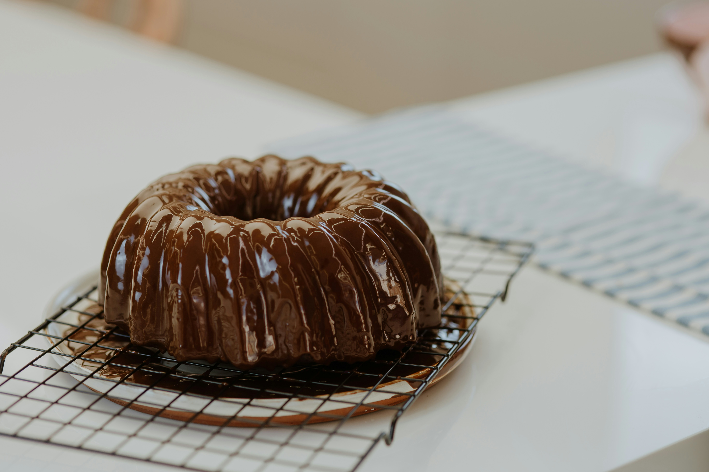
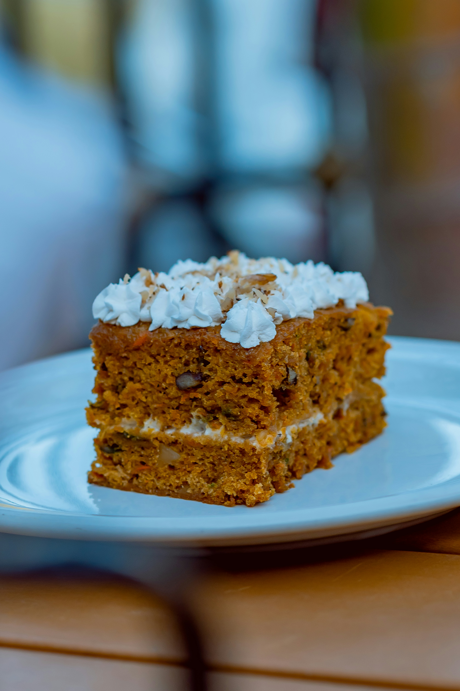
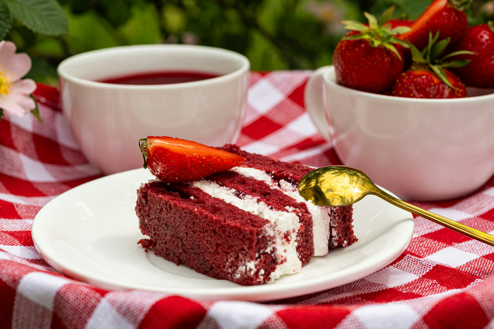

Types of cakes
Cola cake

Ingredients
- 1 (15.25 ounce) package chocolate cake mix
- 1 (12 fluid ounce) can or bottle cola-flavored carbonated beverage (such as Coke®)
Directions
- Preheat the oven to 350 degrees F (175 degrees C). Grease a 9x13-inch baking dish.
- Combine cake mix and cola in a large bowl. Use a hand whisk to mix ingredients until light and smooth, about 3 minutes. Pour batter into prepared baking dish.
- Bake cake in preheated oven until a toothpick inserted in the center of the cake comes out clean, 35 to 40 minutes. Allow cake to cool before cutting.
Pumpkin crunch cake

Ingredients
- 1 (15 ounce) can pumpkin puree
- 1 (12 fluid-ounce) can evaporated milk
- 1 ½ cups white sugar
- 4 large eggs
- 2 teaspoons pumpkin pie spice
- 1 teaspoon salt
- 1 (15.25-ounce) package yellow cake mix
- 1 cup chopped pecans
- 1 cup butter, melted
- 1 (8-ounce) container frozen whipped topping (Optional)
Directions
- Preheat the oven to 350 degrees F (175 degrees C). Lightly grease a 9x13-inch baking pan.
- Combine pumpkin, evaporated milk, sugar, eggs, pumpkin pie spice, and salt in a large bowl; mix well. Spread batter in the prepared pan.
- Sprinkle cake mix over pumpkin batter; pat down gently. Sprinkle chopped pecans evenly over cake; drizzle with butter.
- Bake in the preheated oven until golden, and a toothpick inserted into center comes out clean, 60 to 80 minutes.
Redvelvet cake

Ingredients
cake
- 1 ½ cups white sugar
- ½ cup shortening
- 2 eggs
- 4 tablespoons red food coloring
- 2 tablespoons cocoa
- 1 cup buttermilk
- 1 teaspoon salt
- 1 teaspoon vanilla extract
- 2 ½ cups sifted all-purpose flour
- 1 tablespoon distilled white vinegar
- 1 ½ teaspoons baking soda
Icing
- 1 cup milk
- 5 tablespoons all-purpose flour
- 1 cup white sugar
- 1 cup butter, room temperature
- 1 teaspoon vanilla extract
Directions
- Preheat the oven to 350 degrees F (175 degrees C). Grease two 9-inch round pans.
- Make the cake: Beat 1 1/2 cups sugar and shortening together in a large bowl with an electric mixer until light and fluffy. Add eggs one at a time, beating well after each addition. Combine red food coloring and cocoa to make a paste; add to creamed mixture.
- Mix buttermilk, salt, and 1 teaspoon vanilla together in a small bowl. Add flour, alternating with buttermilk mixture, mixing just until incorporated.
- Mix vinegar and baking soda together; gently fold into cake batter and pour into prepared pans.
- Bake in the preheated oven until a toothpick inserted into the center comes out clean, about 30 minutes. Cool on a wire rack for 5 minutes. Run a table knife around the edges to loosen. Invert carefully onto a serving plate or cooling rack. Let cool, about 30 minutes.
- Make the icing: Heat milk and flour in a saucepan over low heat, stirring constantly, until thick. Set aside to cool completely.
- Meanwhile, beat sugar, butter, and vanilla together in a large bowl with an electric mixer until light and fluffy. Add cooled flour mixture and beat until frosting is a good spreading consistency.
- Frost cake layers when completely cool.
- Serve and enjoy!